health data
Your body is constantly telling you something. Vytals turns those signals into a report a person can read.
01 — Overview
What is Vytals?
Vytals is a family of health products built inside the Innovation team at Bajaj Finserv Health. Each product answers one health question, reads the signals that question needs, and returns a report the person can actually read.
- Design Lead · Innovation team Role
- 2024 Year
- Bajaj Finserv Health Company
- 8 designers · 4 product · 4 technology Team
- Product thinking · experience architecture · UX/UI · report design · design system Scope
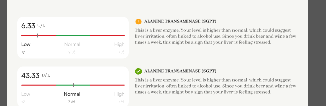
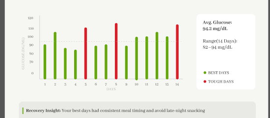
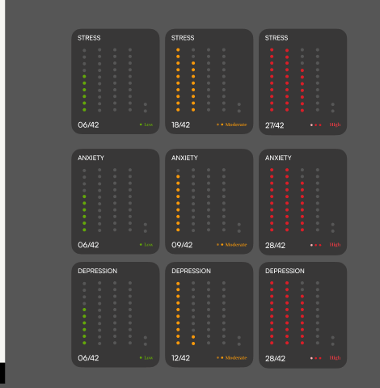
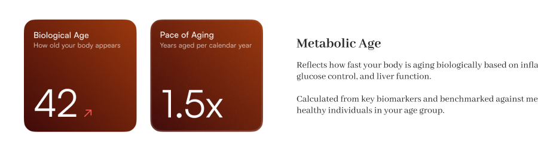
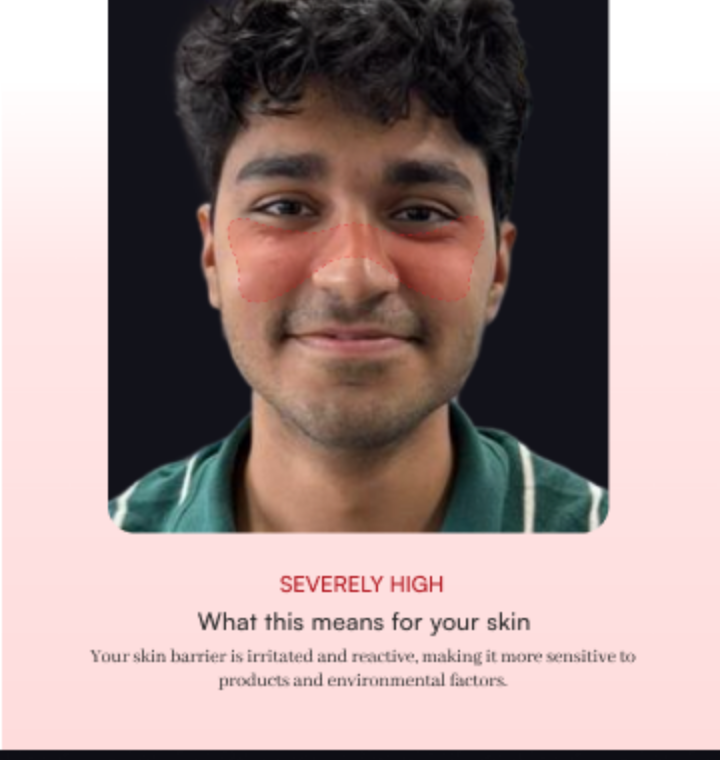
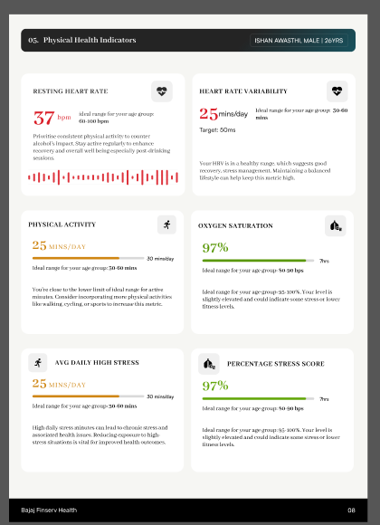
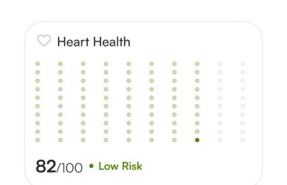
Scroll → Seven kinds of signal, seven real artefacts. Every one of them began as a number and ended as a sentence.
Vytals brings health signals together to help people understand their health.
The products sit in preventive health: they look for early indicators while there is still time to act on them. A Vytals report reads blood results across nine major body systems, compares each one against what is typical for the reader’s age and sex, and explains what the pattern suggests.
The product describes itself plainly on its own cover: “decodes your internal health by analysing key body systems, identifying at-risk organs, and revealing real physiological trends.” Everything in this case study serves that sentence.
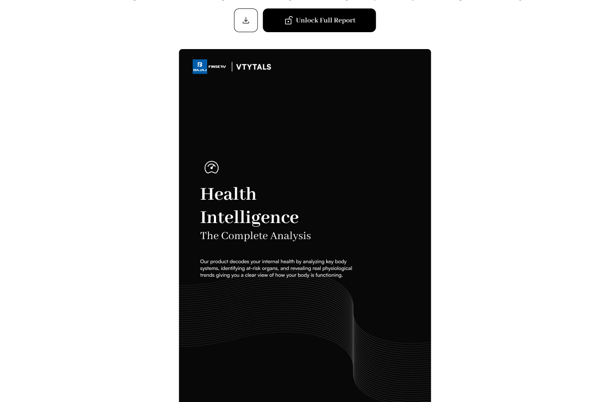
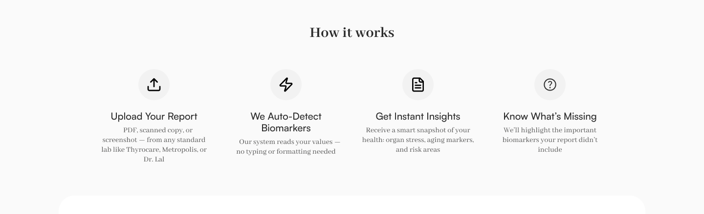
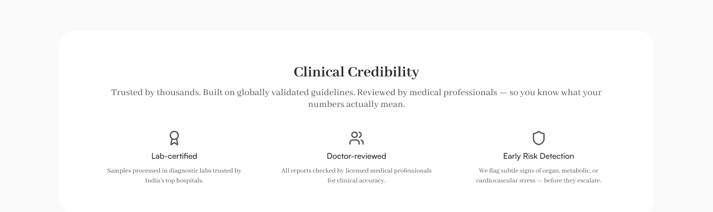
02 — The Opportunity
Health data becomes more useful when people can understand it.
01
Volume
A modern panel carries a lot of signal.
Blood, questionnaires, wearables, scans and continuous readings all describe the same body from different angles.
02
Context
Context is what makes a reading readable.
A value becomes meaningful next to a range, a cohort, an age, or a plain sentence about what it does.
03
Action
Understanding earns its value when it changes a decision.
Every finding in a Vytals report carries a response the reader can start this week.
The central question: how do we help someone understand their own body better?
Data Information Understanding Insight Action
The spine Every product in the family runs this sequence. It is the recurring motif of the whole ecosystem, and it returns five more times on this page.
03 — How Vytals Works
From a health question to a clearer understanding.
The product model is the same in every product. A person starts with a question they would say out loud, provides the signals that question needs, and receives a report that answers it.
Choose
A health question
Each product is named for the question it answers, so choosing a product is choosing a question.
Provide
The signals
A home sample collection, an assessment, a wearable connection or a facial scan, depending on the question.
Analyse
The reading
Values are scored against age and sex cohorts, grouped into body systems and reviewed clinically.
Read
The report
One reading experience, ordered so the reader always knows where they are in the argument.
Act
The next step
Four fixed action lanes close every section that raises a concern: diet, activity, lifestyle, other.
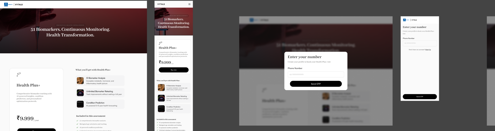
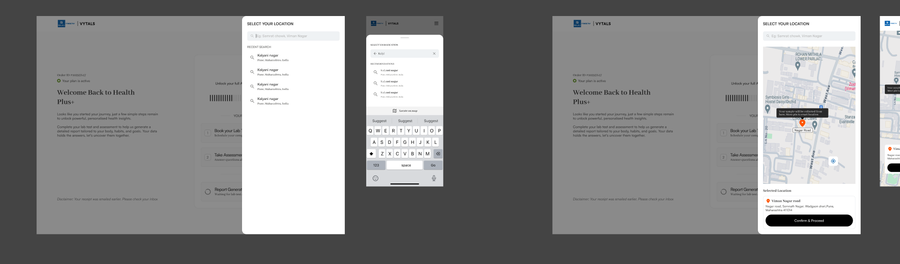
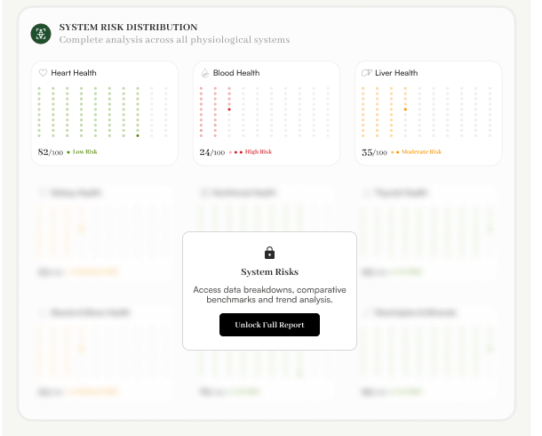
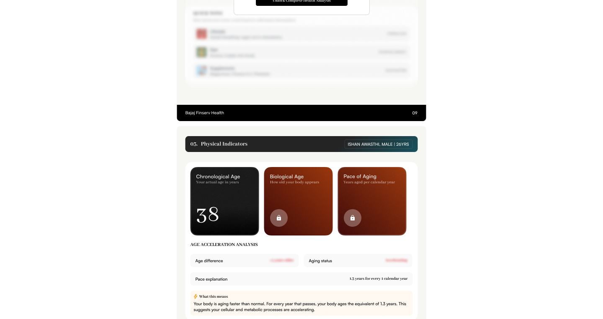
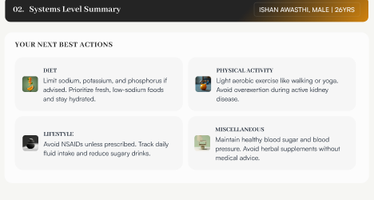
Membership
The journey continues after the result.
Health Plus+ is the membership entry point: a yearly plan built around a broad biomarker panel and continuous monitoring. It carries the part of the experience that happens in the world — a collection at your door, an assessment on your phone, a report a few days later.
Join Discover Test Understand Continue
The plan page names exactly what arrives.
A number, a price and a promise: 51 biomarkers, continuous monitoring, home collection, a doctor-reviewed plan and a digital report. The proposition is stated in the reader’s units before any money moves.
Sign-up runs on a phone number and an OTP, then a name and an age. The shortest path that still gives the report enough to personalise itself.
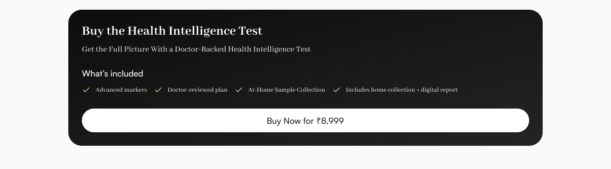
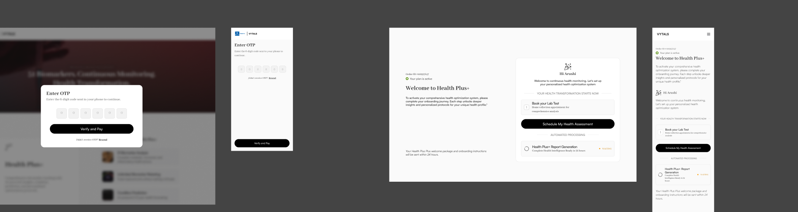
The waiting state is a designed state.
“Your plan is active”, then three numbered steps: book your lab test, take your health assessment, report generation. The third step names itself openly as automated processing with a time expectation attached.
Days pass between paying and understanding. Naming that gap, and giving the reader something completable inside it, is what keeps the journey continuous.
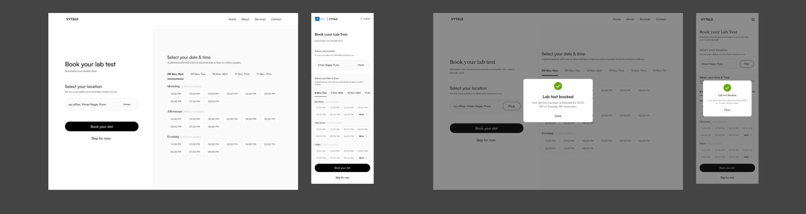
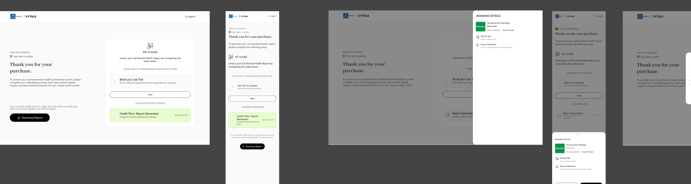
Continue Booking details stay visible afterwards, with view, cancel and reschedule in the same place. A yearly plan needs a screen that a person returns to.
04 — Product Ecosystem
One platform. Multiple health questions.
Blood, an assessment, a wearable, a facial scan, a genetic sample. Each signal carries its own economics and its own emotional register, so each health question became a focused product with its own world — connected by one report experience.
01
Health Intelligence
“How is my body actually doing?”
A whole-body read, resolved into nine body systems with a narrative order.
- Signals
- A large blood biomarker panel.
- What you learn
- System scores, biological age, pace of ageing, percentile against your cohort, predicted risks.
- Report output
- A long web and print document, with a free preview and an unlockable full analysis.
02
Alcohol Impact
“Is my drinking doing damage?”
A single impact score, explained organ by organ in the same breath it is delivered.
- Signals
- Lifestyle answers read against liver and lipid markers.
- What you learn
- An impact score, organ-by-organ consequence, current state and future risk.
- Report output
- A navy print-format report closing on a personalised action plan.
03
Stress Impact
“Is stress showing up in my body?”
Something felt subjectively, scored against published instruments named on the page.
- Signals
- The Perceived Stress Scale, the Holmes-Rahe Inventory, wearable readings and biomarkers.
- What you learn
- Domain-by-domain impact — physical, emotional, social, cognitive — with sleep and recovery alongside.
- Report output
- A charcoal report with archetypes, matrices and wearable panels.
04
Metabolic
“How well am I processing energy?”
Glucose, lipids and energy read as one system over a fortnight of real days.
- Signals
- Blood markers plus fourteen days of continuous glucose readings.
- What you learn
- A metabolic and food score, what is working well, easy wins, and next steps by time of day.
- Report output
- A green, photographic report built around a fourteen-day analysis.
05
Skin Analysis
“Why does my skin look like this?”
The finding shown on the reader’s own face, in a dark conversational mobile experience.
- Signals
- A facial scan.
- What you learn
- A labelled finding, a coach you can question, a projection forward, and a plan.
- Report output
- A mobile result experience, built as a flow.
—
Entry · Health Plus+
The membership around the family
A yearly plan built on a broad panel with continuous monitoring, and the logistics that make a blood test happen.
- Signals
- 51 biomarkers plus the health assessment.
- What you learn
- The full Health Intelligence read, refreshed over the year.
- Report output
- The same report experience, delivered on a plan.
—
Family · HealthEx · DNA
“What am I predisposed to?”
Genetic markers, carrying the strictest language rule in the family: predisposition reads as predisposition.
- Signals
- Genetic markers.
- What you learn
- Inherited tendencies, framed alongside the signals a person can change.
- Evidence
- No design artefact was available for this page, so none is shown.
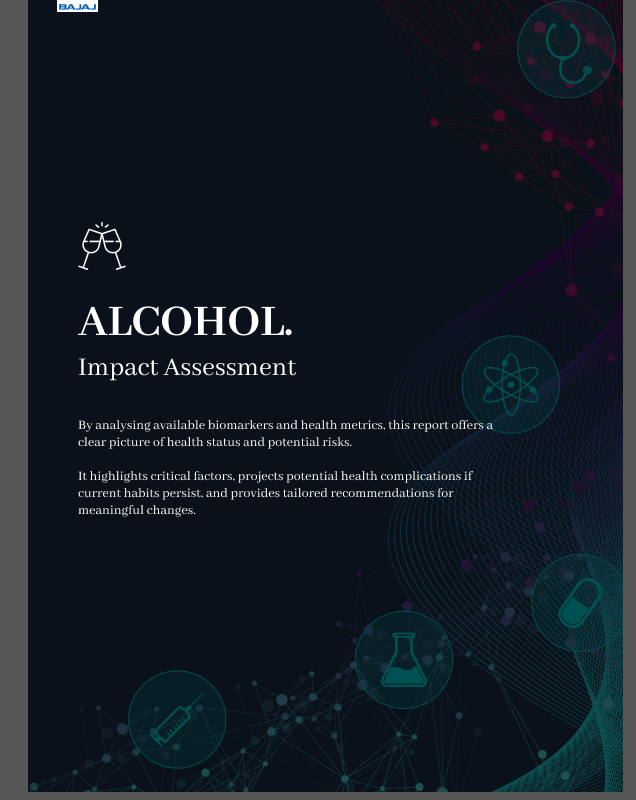
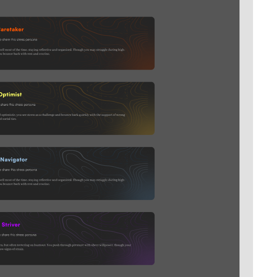
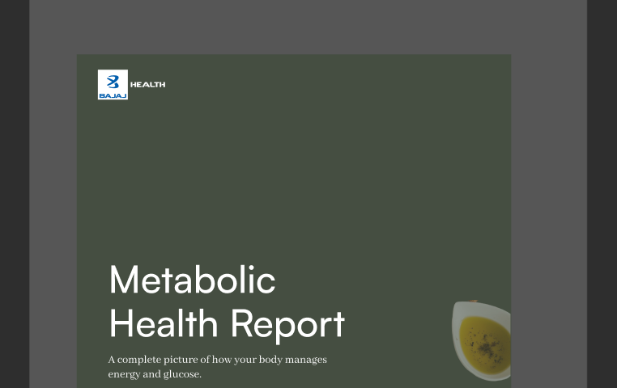
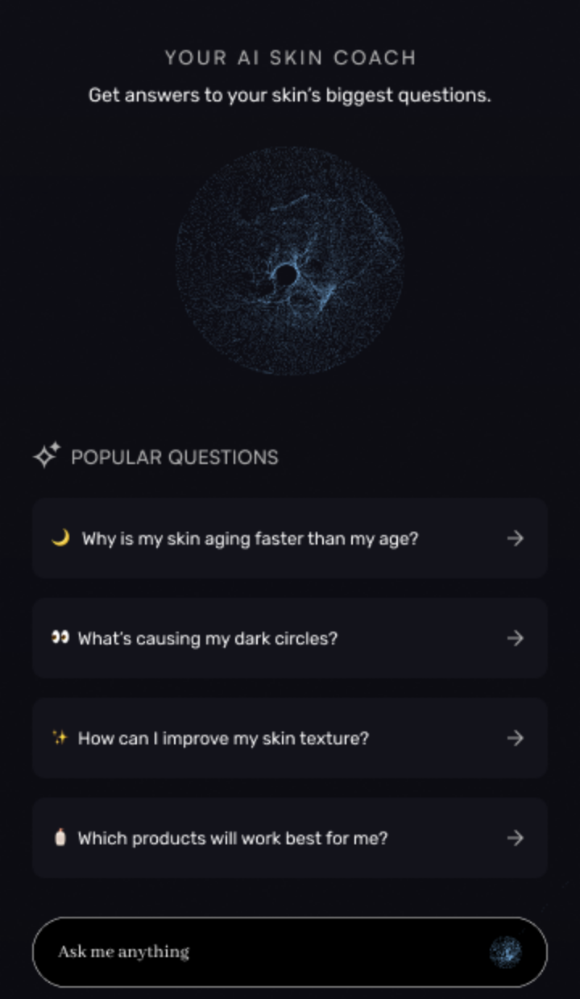
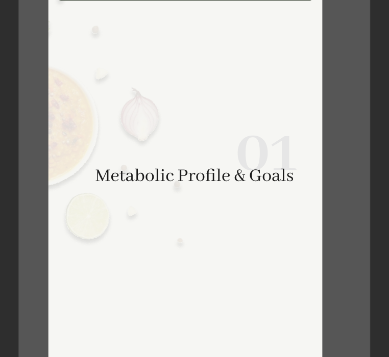
Five worlds, one family Recognisably related, never the same page. The grammar underneath is identical; the temperament changes with the conversation.
What we test
Different questions require different signals.
Six kinds of signal run through the family. Each one answers a different part of the same question, and each one needed its own way of being drawn.
—
Blood biomarkers
Lipid panel · Inflammation (hs-CRP) · Kidney function (creatinine, eGFR, BUN, albumin/creatinine ratio) · Liver function (SGOT, SGPT, albumin) · Thyroid (TSH) · Bone and mineral health (calcium, vitamin D) · Complete blood count · Micronutrients (vitamin B12) · Electrolytes (sodium, potassium) · Glucose metabolism (fasting glucose, HbA1c).
What it helps a person understand: how nine body systems are performing right now, and which of them is carrying the most load.
—
Self-reported assessment
Lifestyle and habit questions, plus published instruments named openly on the page: the Perceived Stress Scale and the Holmes-Rahe Inventory.
What it helps a person understand: how daily life connects to what the blood shows, and it earns the report the right to speak in the second person.
—
Wearable signals
Steps and calories · sleep duration, REM and deep sleep · resting heart rate · heart rate variability · oxygen saturation · daily high-stress minutes and percentage stress score.
What it helps a person understand: how the last few weeks actually felt, in numbers they can compare to an ideal range for their age group.
—
Continuous glucose, fourteen days
Daily glucose readings with an average and a range, with best days and tough days marked, read against meal timing.
What it helps a person understand: how their own food behaves in their own body, on their own days.
—
Facial scan
A scan of the reader’s own face, returned with an overlay marking the finding and a severity label.
What it helps a person understand: exactly where the finding sits, because it is drawn on their own face.
—
Genetic markers
Inherited markers, communicated as predisposition and always placed beside the signals a person can change.
What it helps a person understand: the tendencies they started with, framed so the changeable signals stay in view.
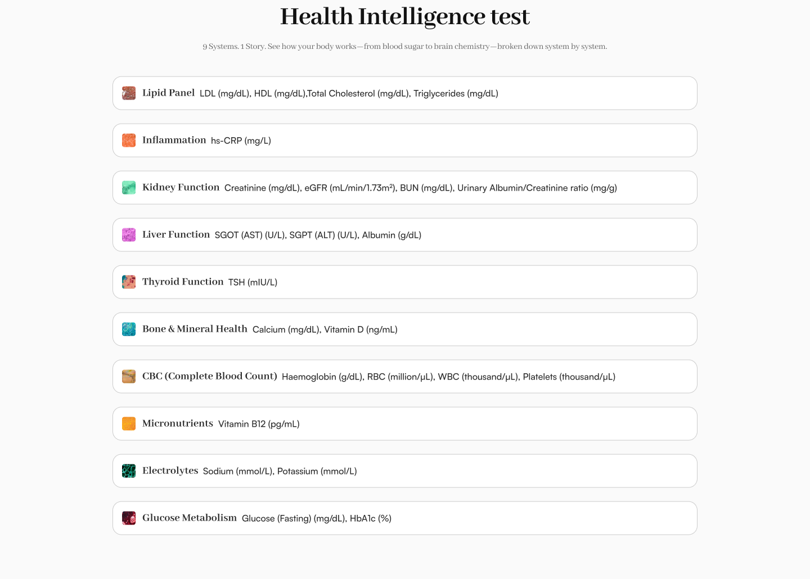
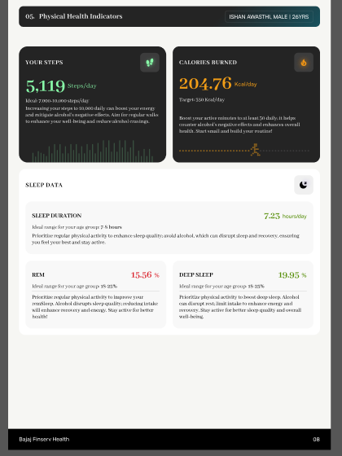
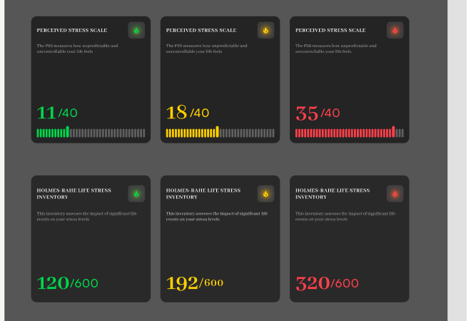
Signal Meaning Health question Report
05 — The Design Challenge
Turning complex health data into meaningful understanding.
Six design goals held across every product. They are the standing brief that the rest of this case study answers.
—
Density
Give a hundred readings a reading order.
—
Literacy
Write every number in ordinary words.
—
Context
Place each value against something already familiar.
—
Trust
Match the language to the confidence of the science.
—
Action
Attach a response to every concern raised.
—
Consistency
Let one reading experience carry every product.
—
Devices
Hold the same report on print, web and mobile.
—
Scale
Let the second product inherit the first.
The spine, shown in real screens.
Data Information Understanding Insight Action
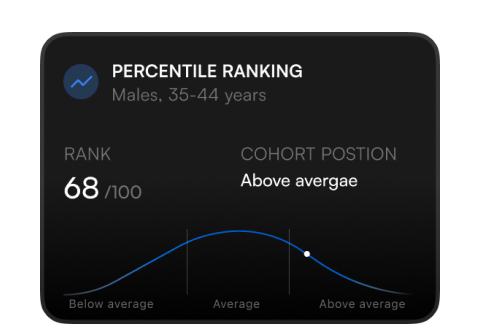
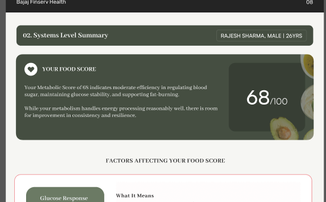
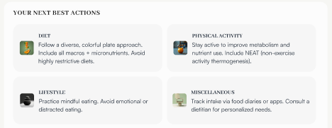
06 — My Approach
How I approached the product.
Design entered this initiative at the point where the health question was still being chosen, so the work runs from opportunity through to the component library that let five products ship in parallel.
—
Understand the health problem
Work the health space with product and the business, and learn what each signal can honestly support.
—
Explore product opportunities
Turn health problems into candidate products, and shape the ones we could make understandable.
—
Define the experience
Decide what a person provides, what they receive, and what carries the value.
—
Structure the information
Give the report a fixed argument so detail can nest inside it.
—
Create the visual language
One surface rule, one status scale, one colour world per product.
—
Build the design system
Role-named tokens, three-state components, patterns for data and for reports.
—
Scale across products
Make the second product inherit the first, and the fifth inherit all four.
—
Enable the team
Direction, review and a quality bar that held across work running at the same time.
Design contributed to what the product became.
The comprehension question came first and shaped product scope. If a signal could be read but never explained, it stayed out. If a signal could be made meaningful with one good device, it earned its place.
That is why age equivalence, percentile ranking and the dot-density field appear across the family: each one converts a technical value into a unit a person already owns.
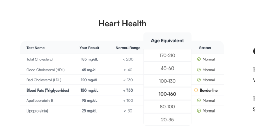
Innovation → product design
Questions became products.
Health problem Opportunity Product idea Design exploration Product experience Report
The Innovation team turned health questions into candidate products.
The initiative arrived from the Chief Business Officer as a question about the health space, open enough to shape. I led the design front of it, working with product and technology to shape which questions could become products and what each product would return.
Product decisions and design decisions were the same conversation here. The clearest example is the free preview: the report opens with real scores visible and the depth behind them held back, so a person meets the value before they meet the price.
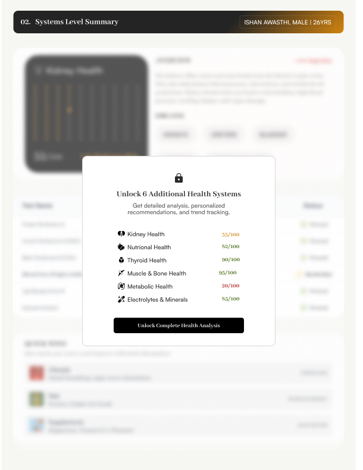
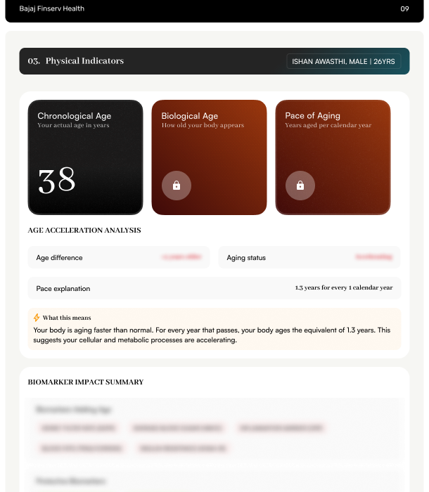
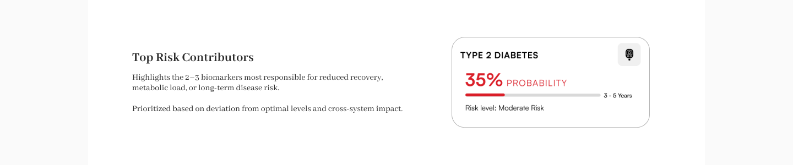
07 — Design Language & System
Building the visual foundation.
Multiple health products needed one coherent visual language — tight enough to be recognisable, open enough to let each product keep its own temperament.
Measurement sits on dark. Explanation sits on paper.
One rule, applied everywhere. Every score, gauge and instrument lives on a near-black card; everything interpretive lives on warm paper. A reader learns the distinction in the first two pages and carries it for the rest of the document.
It is a rule about surfaces , which means a new instrument can join any product and already know how it should look.
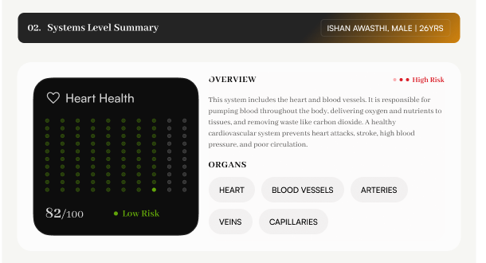
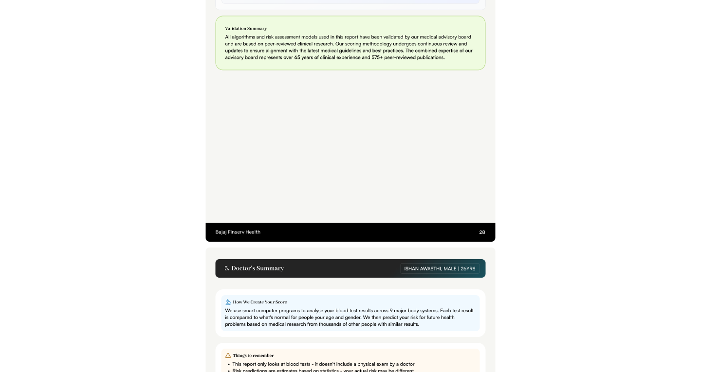
One status scale carries every kind of reading.
Low risk Moderate risk High risk
Three steps, carried by a hue and a dot count and the same words, used for snapshots, lab results, lifestyle, wearables, organs, instruments and individual biomarkers. Rendered here from the project’s own token values.
Every report page also carries a persistent identity band — name, sex and age — plus a numbered section title and a page footer, so a reader always knows whose body this is and which part of the argument they are standing in.
Each product got its own world.
The grammar underneath stays identical. The colour world changes, because a metabolic report and an alcohol report are different conversations.
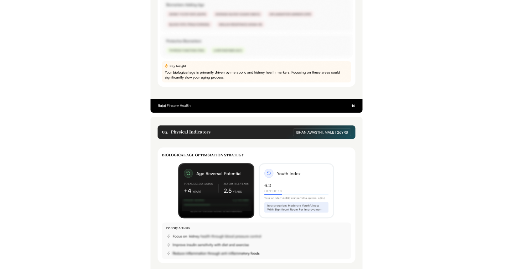
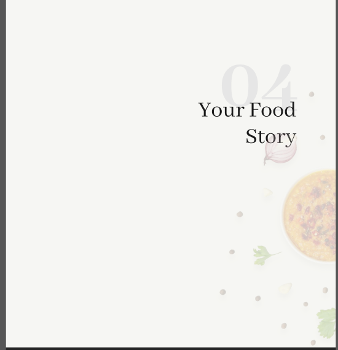
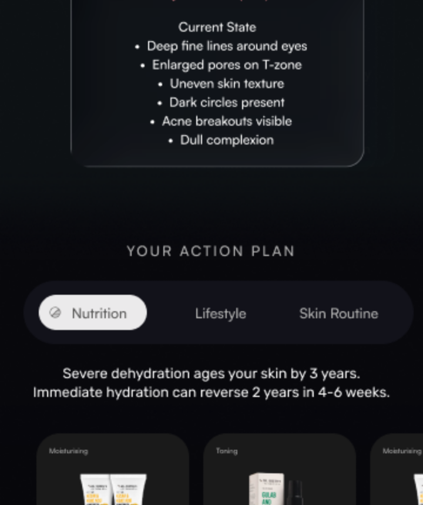
Design system
Building a system that scales across products.
One product runs happily without a system. Five products, six kinds of signal and eight designers need one — and they need it by the third launch.
—
Foundations
Type scale, grid, spacing, surfaces, the dark-and-paper rule.
—
Tokens
Named by role — Success/400, Caution/400, Error/600 — so status is decided once.
—
Components
Biomarker card, score card, status chip, organ chip, myth card, FAQ card, action lane.
—
Patterns
Data patterns and report patterns: section openers, identity band, results table, risk field.
—
Products
Five reading experiences, one grammar, on print, web and mobile.
Every component drawn in all of its states.
Low, moderate, high — and the extremes — drawn together, because that is what forces the honest questions. Does the field still read when it is nearly empty? Does the number hold in red? Does the shape carry meaning without colour?
It also settles the question before it reaches engineering. There is nothing left to interpret at handoff.
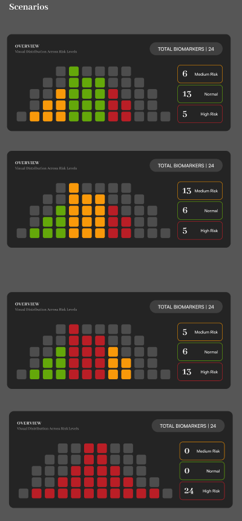
The library lived beside the work.
The component library sat on the same canvas as the reports consuming it. A designer building page nine could see the component and all its states without leaving the file, which is what kept documentation and shipped work in step.
Icon sets were built as named sets too — organs for the anatomy layer, action types for the plan layer — so a new report could assemble its own page from parts that already agreed with each other.
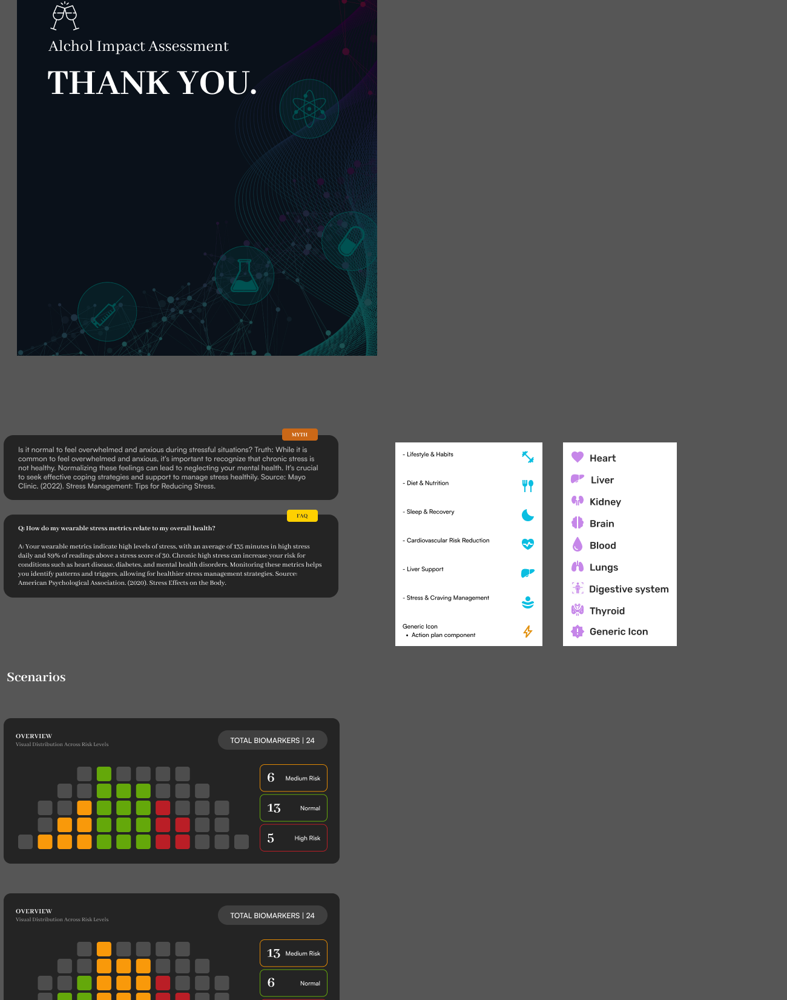
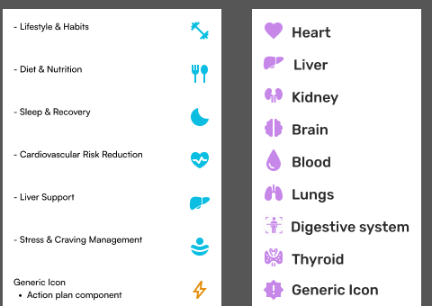
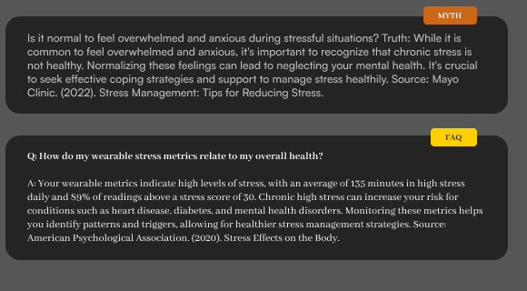
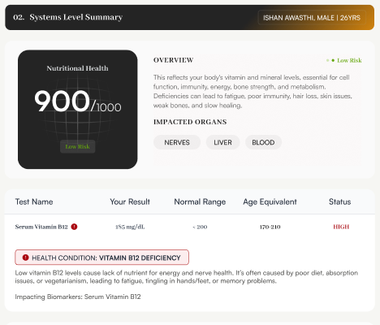
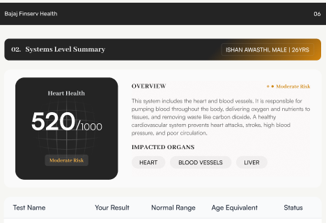
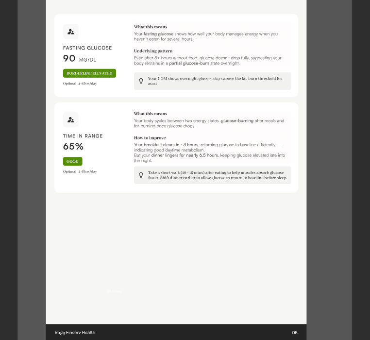
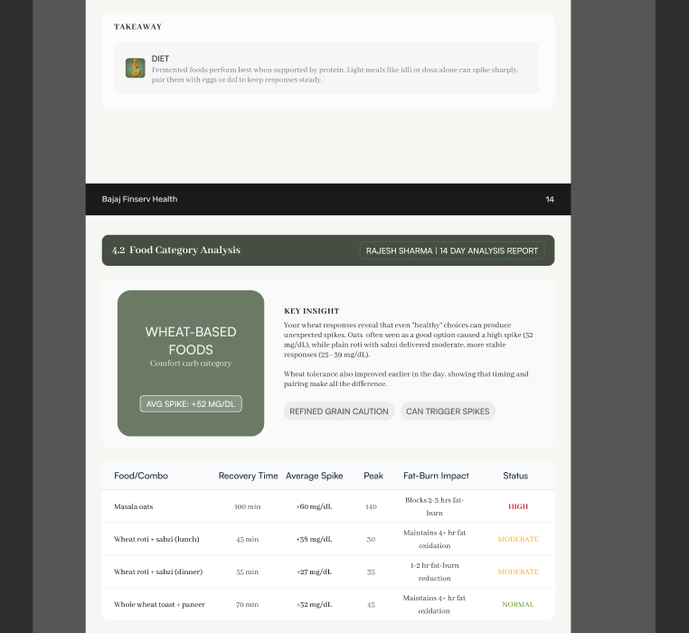
One pattern, many products The clearest test of a system is whether the same component can carry good news and bad news without being redrawn.
08 — The Report
The report turns health data into understanding.
The report is the product every person actually meets. It is a document with an argument, and the order of its sections is the argument.
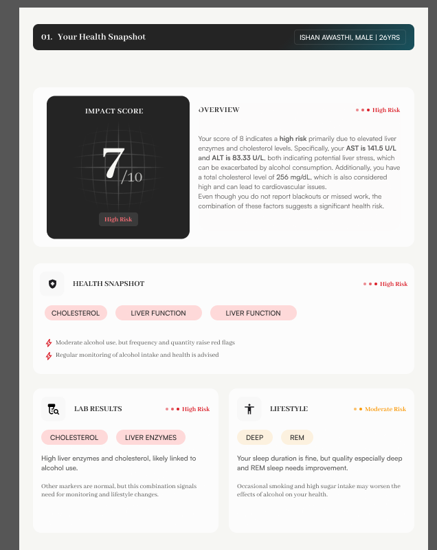
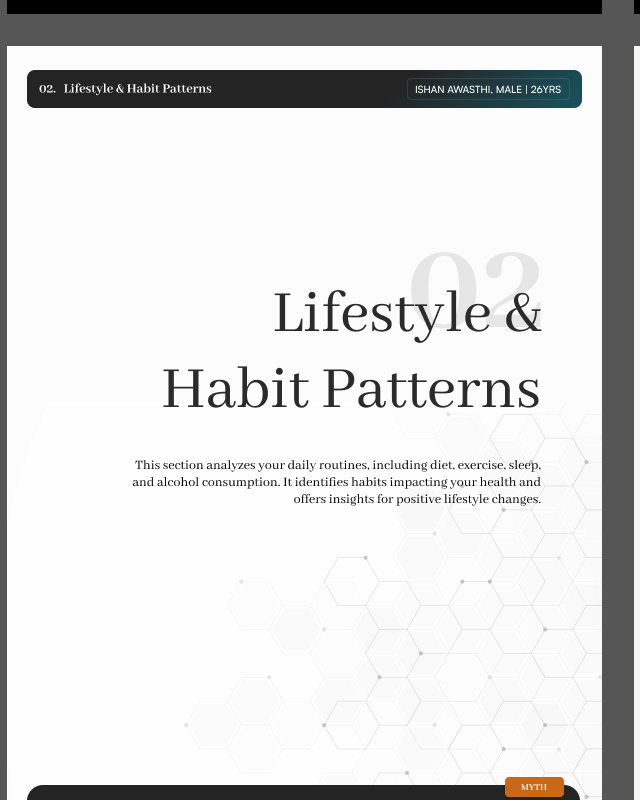
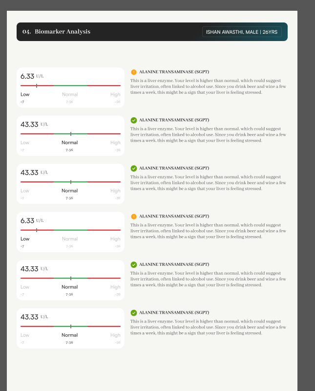
01
Raw signal
It opens as an assessment.
The cover names the product and waits. The reader agrees to read before the report says anything about them, and restraint is the only design decision on this page.
02
Information
One number carries the whole assessment.
A single impact score on a dark card, with its explanation immediately beside it, quoting the reader’s own liver-enzyme and cholesterol values back to them. Everything after this page is evidence for this figure.
03
Context
Your habits, stated back to you.
Before any biology, the report repeats what you told it in the assessment. It earns the right to interpret by first showing that it listened.
04
Understanding
Marker by marker, in ordinary words.
The biomarker card repeated down the page — value, position on a range, meaning, and the link back to your own life. This is the component the entire system is built around.
05
Insight
What it means for each system.
Organ by organ: impact level, markers analysed, why that organ is worth looking at, where you are now, and future risk split into contributing and positive factors.
06
Action
It closes on a plan.
A personalised action plan ends every report. The structure guarantees it: each concern the document raises arrives with a response attached.
The order is the argument Six openers in a fixed sequence, in every product. A reader always knows which of the six they are standing in.
One experience. Many expressions.
The same six-part spine runs through every product — at a different length, on a different device, in a different colour world.
Raw signal Information Context Understanding Insight Action
Information design
Making every health signal easier to understand.
Seven devices carry the comprehension work across the family. Each one answers the same four questions, and each one leaves the reader holding something after they look away.
01 · The biomarker card
A number becomes readable when it has a position.
- The information
- A single laboratory value with its unit, such as 62.33 U/L.
- What the reader needs
- Whether this value is where it should be.
- The mechanism
- A low–normal–high track with the reading marked, and a plain sentence directly beneath.
- The insight it creates
- A place on a scale, which is something a person can hold and repeat.
Raw number Position Meaning
02 · Age equivalence
An age equivalent gives “normal” something to say.
- The information
- A result that sits inside the reference range for the whole adult population.
- What the reader needs
- Whether in-range is the same as ideal for someone their age.
- The mechanism
- An age equivalent column in the results table, translating each reading into an age band.
- The insight it creates
- A technically normal result can still read as this looks like someone older than you , which is the earliest useful signal.
In range Age equivalent Early signal
03 · Biological age
Everybody already has intuition for age.
- The information
- A whole panel of markers across inflammation, glucose control and liver function.
- What the reader needs
- One figure they can carry out of the report and say out loud.
- The mechanism
- Biological age and pace of ageing, as two cards with a sentence explaining what drives them.
- The insight it creates
- A shareable summary, which is how understanding leaves the page and reaches a conversation.
Many markers One unit Shareable
04 · Percentile ranking
A cohort answers the question people actually ask.
- The information
- A health score with no external reference point.
- What the reader needs
- An answer to “is everyone like this?”
- The mechanism
- A percentile against their own age and sex, plotted on a bell curve with the position marked.
- The insight it creates
- Perspective carried by the curve, which keeps health out of a leaderboard.
Your value Your cohort Perspective
05 · The risk field
Risk reads well as accumulation.
- The information
- Many weak signals pointing in the same direction for one organ or system.
- What the reader needs
- A sense of weight, carried honestly.
- The mechanism
- A dot field that fills as evidence mounts, paired with a score and a status word.
- The insight it creates
- Evidence that reads as accumulation, honest about how much the data supports, and a field that scales down to one figure when space is short.
Many signals Density One score
06 · Myth and FAQ cards
Comprehension includes what someone already believes.
- The information
- A correct finding that sits against a widely held belief.
- What the reader needs
- The belief answered in their own words before the finding can land.
- The mechanism
- A recurring card that states the belief as a question, answers it against the reader’s results, and cites a source.
- The insight it creates
- A correction the reader accepts, delivered in the only component that speaks in their voice.
Belief Your data Correction
07 · The four action lanes
Four fixed lanes turn a finding into a next step.
- The information
- A system, organ or marker that needs attention.
- What the reader needs
- Something specific they can start doing.
- The mechanism
- Diet, physical activity, lifestyle and other — the same four lanes, in the same order, in every product.
- The insight it creates
- A response attached to the concern, which is what makes the report worth finishing.
Finding Lane Next step
Number Context Meaning Insight
09 — Designing for Trust
Trust shapes how health information is communicated.
Showing someone their own body makes trust a design material. Five questions set the rules, and every product in the family follows them.
01 · Certainty
The language matches the confidence of the science.
- The design question
- How certain should a prediction sound?
- The design response
- A probability, a named risk level and a time window, written together: 35% chance, moderate risk, potentially the next three to five years.
- Why it matters
- A biomarker indicates. Hedged wording keeps the report accurate, and once the copy hedges the visual system stops shouting too.
02 · Method
The report explains how it reached its own conclusions.
- The design question
- What does a reader need to know about the method?
- The design response
- A “how we create your score” panel in plain language, a doctor’s summary section, and a clinical review statement.
- Why it matters
- A person accepts a conclusion more readily when they can see how it was reached.
03 · Limits
The limits sit inside the report, in the same voice as the findings.
- The design question
- Where do the boundaries of the analysis belong?
- The design response
- A “things to remember” list stating that the report reads blood tests, that predictions are estimates, that family history sits outside it, and that a doctor still leads the decision.
- Why it matters
- Naming the limits inside the document keeps the reader calibrated while they read, where it counts.
04 · Balance
Every risk block carries positive factors alongside contributing ones.
- The design question
- How does a report stay readable to the end?
- The design response
- Future risk is drawn in two columns: what is adding to it, and what is already protecting against it.
- Why it matters
- A reader who stays with the document reaches the plan, and the plan is where the value sits.
05 · Provenance
Each report says when it was made and which version made it.
- The design question
- What makes a health document feel accountable?
- The design response
- Generation date, report identifier and report version printed on the page, with clinical review named in its own section.
- Why it matters
- Health reports are kept, compared and shown to a doctor. Provenance is what lets a document be used that way.
Product flows
The flows that carry the experience.
A blood test is a physical event: someone comes to your house. These are the moments that make that happen, designed for desktop and phone together.
Moment 01
Purchase
The offer, a phone number, an OTP, a name and an age. The shortest path that still personalises the report.
Moment 02
Activation
“Your plan is active”, then three numbered steps with the automated one named openly.
Moment 03
Collection
Location search, map pin, saved addresses, then a date and a slot across morning, afternoon, evening and night.
Moment 04
Assessment
The questions that let a biomarker card speak about the reader’s own week.
Moment 05
Delivery
Report generated and downloadable, with booking details, cancel and reschedule kept in the same place.
The assessment earns the report.
A report needs the panel and the questionnaire together. That is a product decision with a direct design consequence: a biomarker card can say “since you drink beer and wine a few times a week” only because the assessment asked, two steps earlier.
The booking stays live after the booking.
Package, time, collection type and address stay on one card, with cancel and reschedule beside them and a confirmation step before either happens. A yearly plan needs a screen a person can come back to.
10 — Leading the Work
I led the design direction across the Vytals ecosystem.
Design Lead in the Innovation team, across five shipping products and eight designers. Most of the work was making sure the second product never had to reinvent the first.
—
Product thinking
Which questions could become products
Worked the health space with product and the business, and championed the ideas we could make understandable.
—
Product exploration
Concepts made concrete early
Turned candidate ideas into designed report pages fast, so a product could be judged on what a person would receive.
—
Experience architecture
The six-part spine
Defined it, then held it across every product, on print, web and mobile.
—
Information design
The devices themselves
Biomarker card, age equivalence, biological age, percentile, risk field, myth card, four action lanes.
—
UX and UI
Journeys and screens
Membership, purchase, home collection booking, assessment and report delivery, on desktop and mobile.
—
Report design
The product’s real interface
Five report systems, each a different length and device, all one reading experience.
—
Visual direction
Measurement dark, explanation paper
One surface rule, one status scale, and a distinct colour world for each product inside it.
—
Design system
Tokens and multi-state components
Kept on the same canvas as the work, so the library and the product stayed in step.
—
Team
Eight designers, five products
Direction, review and the quality bar, across work running in parallel.
—
Delivery
Design into build
Scope and pricing with product, data limits with technology, launch order with the business.
Product Design System Team Outcome
Team & collaboration
Designing through a team.
Eight designers, four product people and four in technology, with several products moving at once. The job was to make parallel work add up to one ecosystem.
—
How work was divided
Designers owned a product each, which kept the health question, its signals and its report in one head. Shared devices stayed with me so they stayed shared.
—
How consistency was maintained
A fixed report spine and a single status vocabulary, expressed as surface rules, so a new instrument already knew how to behave.
—
How quality was reviewed
Review looked at the reading experience first: does the order argue, does the number carry meaning, does the concern arrive with a response.
—
How designers were enabled
The library sat on the same canvas as the reports, so a designer could pick up a component and all of its states without leaving the file.
—
How work moved into delivery
Components were drawn in every state before handoff, and tokens were named by role, so engineering received settled decisions.
—
How we worked with product and technology
Scope and pricing with product, data availability and processing limits with technology, launch order with the business.
Design and engineering met inside the design file. Tokens were named by role — Success/400 , Caution/400 , Error/600 — and at least one already carried a CSS custom property, so status colour was decided once and read the same way on both sides of the handoff.
Design leadership
Design leadership brings clarity to complex decisions.
Five decisions shaped the whole family. Each one was settled once and then inherited by every product that followed.
“How much should we show at once?”
- Constraint
- A large panel can run to a hundred readings across nine body systems.
- Exploration
- We tested a flat results view, a per-marker drilldown, and a fixed narrative order with detail nested inside it.
- Decision
- A six-part spine — position, cause, signal, evidence, consequence, response — with everything else nested underneath.
- Why
- Progressive disclosure works when the top level is an argument, and the spine gives it one.
“How do we communicate risk clearly?”
- Constraint
- Severity has to be unmissable and has to stay calm.
- Exploration
- Gauges, needles, traffic-light page washes and dot fields were all drawn at low, moderate and high.
- Decision
- A three-step scale in a fixed position carrying a hue, a dot count and a word, with dot fields in place of needles.
- Why
- A reader who can always find the signal is a reader who is never ambushed by it, and colour stays functional throughout.
“How do we make a number meaningful?”
- Constraint
- The reader has no clinical training and no intuition for the units.
- Exploration
- Glossaries, appendices, tooltips and in-place explanation were compared on the same page.
- Decision
- Value, range and sentence in one visual unit, plus a translation into age — the one health unit everybody already owns.
- Why
- Comprehension is a function of proximity: a number and its meaning side by side are one fact.
“How do five products feel like one ecosystem?”
- Constraint
- Five products with different signals, price points and emotional registers, built in parallel by eight designers.
- Exploration
- One identical template, five independent identities, and a shared grammar with local colour were each tried against real pages.
- Decision
- Share the structure and the status vocabulary; give each product its own colour world; enforce it as a surface rule.
- Why
- A reader who has read one Vytals report can read any of them, and every report still sounds like its own conversation.
“How do we move from information to action?”
- Constraint
- The obvious place to finish is the result, and the result is where the reader’s value is lowest.
- Exploration
- Free-form recommendations, a single closing plan, and fixed lanes repeated per section were compared across products.
- Decision
- Four fixed action lanes — diet, physical activity, lifestyle, other — closing every section that raises a concern, in every product.
- Why
- A changed decision is the deliverable, and a fixed structure guarantees every concern arrives with a response.
DesignOps
Making good design repeatable.
The question underneath this chapter: how do you create the conditions for a team to deliver consistently across a growing product ecosystem?
—
Governance
Shared devices and the report spine stayed centrally owned. Product-local decisions stayed with the product designer.
—
Reusable patterns
Data patterns and report patterns were named as patterns, so a new product assembled a page from parts that already agreed with each other.
—
Component organisation
Components grouped by job — measurement, explanation, navigation, action — and drawn in every state they could reach.
—
Documentation in place
The library lived beside the reports consuming it, which is what stopped documentation drifting away from shipped work.
—
Review and critique
Reviews ran against the reading experience and the standing design goals, so feedback pointed at the same bar every time.
—
Quality standards
A component was ready when every state read correctly, including the extremes where nothing is normal and everything is.
—
Engineering collaboration
Role-named tokens and state-complete components meant handoff carried settled decisions.
—
Team allocation
One designer per product for depth, with shared surfaces reviewed together so parallel work converged.
Standard Pattern Component Review Shipped
Quality & evaluation
Measuring what good design enables.
This is the measurement framework I would hold a health-report ecosystem to. It is presented as a framework because the product and business figures for Vytals sit with the business and are not published here.
Product metrics
—
Product adoption
Which health questions people choose, and which combinations they return for.
—
Test completion
Purchase through to sample collected and assessment finished — the logistics middle.
—
Report engagement
Depth reached, sections opened, and whether the plan at the end is read.
—
Report comprehension
Whether a reader can restate their own result and name one thing to do about it.
—
Recommendation engagement
Interaction with the four action lanes, by lane.
—
Repeat behaviour
Return testing on a plan, and movement between products in the family.
Design metrics
—
Design-system adoption
Share of report pages assembled from library components.
—
Reusable component coverage
How much of a new product is inherited before anything new is drawn.
—
Consistency
Status vocabulary and spine order holding across every product and device.
—
Delivery efficiency
Time from a new health question to a first complete report design.
—
Iteration cycles
Rounds needed to reach the quality bar, tracked as the system matures.
—
Implementation quality
Built pages matching the design intent, checked state by state.
Adoption, conversion, revenue and health outcomes sit with the business and are not published here. Every figure that appears in the screenshots on this page is sample data from the design files. Nothing on this page has been estimated to fill a gap.
11 — Outcomes & Learnings
What the work enabled.
—
Product
A family of health products brought to life
Five focused products plus a membership entry point, each answering a distinct health question, shipped one at a time across 2024.
—
Experience
A shared model for reading health data
Position, cause, signal, evidence, consequence, response — one order that holds on print, web and mobile.
—
Information design
A reusable comprehension vocabulary
Biomarker card, age equivalence, biological age, percentile, risk field, myth card, four action lanes.
—
System
A design system that scales
Role-named tokens and state-complete components that let several products ship inside one design language.
—
Team
Parallel work that converged
Eight designers building at the same time, each product inheriting the lessons of the one before it.
—
Business
A design direction for a new health ecosystem
A visual language, a report model and a system the business could keep building on. Commercial figures sit with the business.
Learnings
What Vytals taught me about designing health products.
—
Health design is fundamentally information design.
The visual craft matters because it carries comprehension. Every decision on this project resolved into the same question: what is the reader left holding?
—
More data creates more value when it arrives with context.
A percentile, an age equivalent or a reference range does more for a reader than an extra marker, because it makes the markers they already have legible.
—
Systems become essential as products multiply.
One product can be designed page by page. By the third, a shared grammar is what keeps five products recognisably one family.
—
Visual consistency and semantic consistency work together.
The same colour has to mean the same thing everywhere, or the visual system quietly stops being a system.
—
Trust shapes how health information should be communicated.
Measured language, visible method, named limits and balanced risk are design decisions as much as editorial ones.
—
Design leadership creates clarity for teams and for products.
Settling a decision once, and writing it as a rule the team can apply, is what lets parallel work add up to an ecosystem.
Vytals makes health data easier to understand.
Your body is constantly telling you something.
Data Information Understanding Insight Action